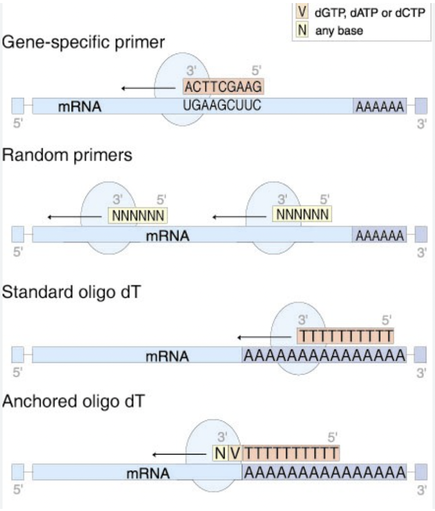

Gene Expression Analysis - Primer Design (2022 - Present)
Advisor - Debashish Sahoo
A primer is a short single stranded DNA fragment that is used in numerous biological experiments such as Polymerase Chain Reaction (PCR). PCR is a technique that is used to amplify a certain section of the DNA sample. The region can be anything as required by the experiment. For our testcase, we focus on amplifying specific genes. One of the most widely used techniques for generating primers are Loop Mediated Isothermal Amplification (LAMP) that uses 4-6 primers to recognise 6-8 regions of target DNA for a highly specific amplification reaction.
However, recent experiments in Boolean Lab have shown that primers suggested via LAMP are not always reliable. Sometimes the lamp primers self amplify themselves. This motivated us to look for other ways to generate primers. As of now, we are generating a couple of test primers using known biological knowledge of extrons in a DNA sequence. We plan on using these generated test primers to train a deep learning model that can predict a set of 4-6 primers for a given gene sequence.